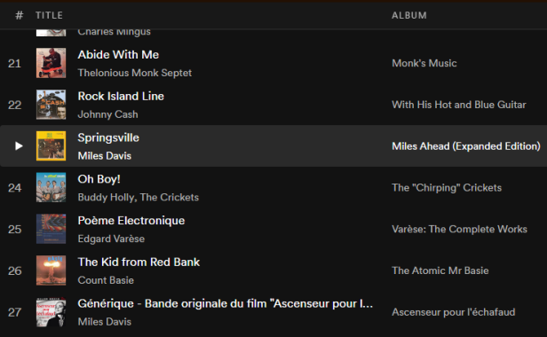

Album Timeline
The Album Timeline is a playlist of over 1,700 albums arranged chronologically by release date spanning from the 1940s up to 2019.
The Spotify playlist contains the first track of each album, which can be used to navigate to the corresponding full album.
The albums featured in the timeline represent a wide variety of popular music genres, as well as a few classical pieces and soundtracks. The criteria used for album inclusion were over 3000 ratings on Rate Your Music.com and at least a 3.7 out of 5 rating. I also used my own subjective judgement here and there, as well as lists and reccomendations from other sources.
I started work on this incarnation of the project in 2018, and finished in 2021. I plan to listen to every album on the list starting from the beginning, and have so far made it halfway through 1974.